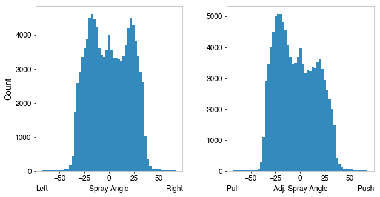

[!NOTE] All public data-fetching APIs are asynchronous. Use
awaitinside an async environment, or wrap calls withasyncio.run()in scripts.
Baseball Savant / Statcast
Documentation and API reference for Baseball Savant (Statcast) leaderboards, pitch-level queries, game feeds, and prospect rankings.
Pitch-Level Queries
Retrieve detailed pitch-level Statcast database rows.
Functions
statcast()— pitch-level data for a date range (also available assavant.statcast)statcast_single_game()— pitch data for a single game (also available assavant.single_game)statcast_batter()— pitch data for a specific batterstatcast_pitcher()— pitch data for a specific pitcher
Arguments
start_date/end_date: Date range inYYYY-MM-DDformat.team: Optional team abbreviation (e.g."LAD","NYY","BOS").verbose: WhenTrue, prints retrieval progress messages.parallel: Enables concurrent downloads for large date ranges.game_pk: MLBAM game identifier.player_id: MLBAM player identifier.[!TIP] Don't know the player ID? Use
pb.playerid_lookup("Judge", "Aaron")orpb.player_name_suggestions("jud")to find thekey_mlbamfor any player.
Output DataFrame Schema
Pitch-level functions (statcast, statcast_single_game, statcast_batter, statcast_pitcher) return a pl.DataFrame containing up to 92 Statcast tracking fields.
| Column Name | Polars Type | Description |
|---|---|---|
pitch_type |
pl.String |
Two-letter pitch classification code (e.g. "FF", "SL", "CH"). |
game_date |
pl.String |
Date of the game (YYYY-MM-DD). |
release_speed |
pl.Float64 |
Pitch release velocity in miles per hour (mph). |
player_name |
pl.String |
Pitcher name formatted as Last, First. |
batter |
pl.Int64 |
MLBAM player ID for the batter. |
pitcher |
pl.Int64 |
MLBAM player ID for the pitcher. |
events |
pl.String |
Final event outcome of the plate appearance (e.g. "single", "strikeout"). |
description |
pl.String |
Outcome of the individual pitch (e.g. "ball", "foul", "called_strike"). |
zone |
pl.Int64 |
Strike zone area identifier (1–14). |
game_pk |
pl.Int64 |
Unique MLBAM identifier for the game. |
launch_speed |
pl.Float64 |
Exit velocity of batted ball in mph. |
launch_angle |
pl.Float64 |
Launch angle of batted ball in degrees. |
effective_speed |
pl.Float64 |
Perceived pitch speed incorporating release extension. |
release_spin_rate |
pl.Float64 |
Spin rate of pitch in revolutions per minute (rpm). |
pitch_name |
pl.String |
Full description of pitch type (e.g. "4-Seam Fastball"). |
spin_axis |
pl.Float64 |
Spin axis angle of pitch in degrees (0–360). |
Compiled Dataset (Local Parquet)
Persist full-season Statcast pitch data as Hive-partitioned Parquet files under
{cache_dir}/compiled-datasets/statcast/year={year}/statcast.parquet, then query
them lazily with Polars predicate and projection pushdown.
Functions
scan_statcast(seasons=None, *, auto_download=False, context=None)— lazily scan local partitions (also available assavant.scan_statcast)sync_statcast(seasons, *, force_update=False, verbose=True, concurrency_limit=3, context=None)— scrape full seasons into partitions (also available assavant.sync_statcast)
Arguments
seasons: Target season(s) to scan or sync. WhenNone, all locally synced partitions are scanned.auto_download: WhenTrue, missing seasons are synced before scanning.force_update: WhenTrue, re-scrape and overwrite existing partitions.concurrency_limit: Maximum parallel Savant sub-queries during sync.
Example
import asyncio
import polars as pl
import polars_baseball as pb
async def main() -> None:
# 1. Scrape and persist 2023 + 2024 full seasons
await pb.sync_statcast([2023, 2024])
# 2. Query locally with predicate pushdown
lf = await pb.scan_statcast(seasons=[2024])
mean_velo = lf.filter(pl.col("pitch_type") == "FF").group_by("player_name").agg(
pl.col("release_speed").mean().alias("mean_velo")
).collect()
print(mean_velo)
if __name__ == "__main__":
asyncio.run(main())
[!NOTE]
scan_statcastraisesUpstreamUnavailableErrorwhen a requested season has no local partition andauto_downloadisFalse. Requires a file-backed cache directory (set viapb.configure_cache(Path)).
Batter Leaderboards
Retrieve aggregate batter performance statistics.
Functions
savant.batter_percentile_ranks(year: int) -> pl.DataFramesavant.exitvelo_barrels(year: int, player_type: str = "batter", min_bbe: int | str = "q") -> pl.DataFramesavant.expected_stats(year: int, player_type: str = "batter", min_pa: int | str = "q") -> pl.DataFramesavant.run_value(year: int, player_type: str = "batter") -> pl.DataFramesavant.bat_tracking(year: int, player_type: str = "batter", min_swings: int | str = "q") -> pl.DataFrame
Arguments
year: Leaderboard season.min_pa,min_bbe,min_swings: Minimum playing-time/event thresholds. Accept"q"for qualifying hitters.player_type:"batter"or"pitcher".
Pitcher Leaderboards
Retrieve aggregate pitcher performance statistics.
Functions
savant.pitcher_exitvelo_barrels(year: int, min_bbe: int | str = "q") -> pl.DataFramesavant.pitcher_expected_stats(year: int, min_pa: int | str = "q") -> pl.DataFramesavant.pitcher_pitch_arsenal(year: int, min_pitches: int = 250, arsenal_type: ArsenalType = ArsenalType.AVG_SPEED) -> pl.DataFramesavant.pitcher_arsenal_stats(year: int, min_pitches: int = 25) -> pl.DataFramesavant.pitcher_pitch_movement(year: int, min_pitches: int | str = "q", pitch_type: str = "FF") -> pl.DataFramesavant.pitcher_active_spin(year: int, min_pitches: int = 250) -> pl.DataFramesavant.pitcher_percentile_ranks(year: int) -> pl.DataFramesavant.pitcher_spin_dir_comp(year: int, pitch_a: str = "FF", pitch_b: str = "CH", min_pitches: int = 100, pitcher_pov: bool = True) -> pl.DataFramesavant.pitcher_run_value(year: int) -> pl.DataFramesavant.pitcher_bat_tracking(year: int, min_swings: int | str = "q") -> pl.DataFramesavant.pitch_arsenal_stats(year: int, player_type: str = "pitcher", min_pitches: int = 25) -> pl.DataFramesavant.pitch_tempo(year: int, min_pitches: int = 250) -> pl.DataFramesavant.park_factors(year: int | list[int] | tuple[int, int] | None = None, start_year: int | None = None, end_year: int | None = None, venue_id: int | list[int] | None = None, bat_side: str = "all") -> pl.DataFrame
Arguments
min_pitches,min_pa,min_bbe,min_swings: Minimum pitches, plate appearances, batted ball events, or swings thresholds.arsenal_type: High-level pitch arsenal metric selection (ArsenalType.AVG_SPEED, etc.).pitch_type: Pitch code (e.g."FF"for four-seam fastball,"SL"for slider).pitch_a/pitch_b: Pitch types to compare.pitcher_pov: Point-of-view perspective.Truefor pitcher view,Falsefor batter view.
Fielding Leaderboards
Retrieve specialized defensive metrics.
Functions
savant.outs_above_average(year: int, pos: str, min_att: int | str = "q", view: str = "Fielder") -> pl.DataFramesavant.fielding_run_value(year: int, pos: str, min_inn: int = 100) -> pl.DataFramesavant.outfield_directional_oaa(year: int, min_opp: int | str = "q") -> pl.DataFramesavant.outfield_catch_prob(year: int, min_opp: int | str = "q") -> pl.DataFramesavant.outfielder_jump(year: int, min_att: int | str = "q") -> pl.DataFramesavant.catcher_poptime(year: int, min_2b_att: int = 5, min_3b_att: int = 0) -> pl.DataFramesavant.catcher_framing(year: int, min_called_p: int | str = "q") -> pl.DataFramesavant.arm_strength(year: int, min_throws: int = 50) -> pl.DataFramesavant.catcher_throwing(year: int, min_att: int = 5) -> pl.DataFramesavant.catcher_stance(year: int) -> pl.DataFramesavant.catcher_blocking(year: int, min_chances: int = 100) -> pl.DataFrame
Arguments
pos: Defensive position abbreviation (e.g."CF","SS").min_att,min_opp,min_throws,min_inn,min_chances: Minimum threshold qualifiers.view: Leaderboard projection perspective (e.g."Fielder").
Running Leaderboards
Retrieve baserunning, speed, and running split leaderboards.
Functions
savant.sprint_speed(year: int, min_opp: int = 10) -> pl.DataFramesavant.running_splits(year: int, min_opp: int = 5, raw_splits: bool = True) -> pl.DataFramesavant.baserunning_run_value(year: int, min_opp: int = 5) -> pl.DataFramesavant.base_stealing(year: int, min_attempts: int | str = "q") -> pl.DataFrame
Arguments
min_opp: Minimum number of sprinting opportunities.raw_splits: WhenTrue, returns raw split times. WhenFalse, returns split percentiles.min_attempts: Minimum number of stolen-base attempts.
Gamefeed APIs
Retrieve JSON datasets for single or batch games, parsed directly into dataframes.
Functions
savant.gamefeed_exit_velocity(game_pk: int | str) -> pl.DataFramesavant.gamefeed_exit_velocity_many(game_pks: Sequence[int | str], parallel: bool = True) -> pl.DataFramesavant.gamefeed_pitch_data(game_pk: int | str) -> pl.DataFramesavant.gamefeed_pitch_data_many(game_pks: Sequence[int | str], parallel: bool = True) -> pl.DataFrame
Arguments
game_pk: MLB Advanced Media game identifier.game_pks: A list of game IDs to fetch and merge concurrently.
Prospect Rankings
Retrieve prospect rankings and pipeline data.
Functions
prospect_rankings(list_type: str = "top100", year: int | None = None) -> pl.DataFrametop_prospects(team_name: str | None = None, player_type: str | None = None) -> pl.DataFrame
Arguments
list_type: Type of list to query (e.g."top100","draft","international", or position/team names).team_name: Target team name (e.g."bluejays","yankees").player_type:"pitchers"or"batters".
Spray Angle Utilities
The legacy add_spray_angle pandas utility was removed in a prior version. Derived spray angles should be calculated directly with Polars expressions or Python math:
from math import atan2, pi
hc_x, hc_y = 125.42, 198.27
spray_angle = atan2(hc_x - 125.42, 198.27 - hc_y) * 180 / pi
Sample Distribution

Example
import asyncio
import polars_baseball as pb
async def main() -> None:
# 1. Pitch-level queries
game_df = await pb.statcast_single_game(529429)
print("Single Game:", game_df.head(2))
# 2. Leaderboards
expected = await pb.savant.expected_stats(2026, player_type="batter", min_pa=100)
arsenal = await pb.savant.pitcher_pitch_arsenal(2026, min_pitches=250)
print("Expected Stats:", expected.head(2))
print("Pitcher Arsenal:", arsenal.head(2))
# 3. Fielding & Running
oaa = await pb.savant.outs_above_average(2026, pos="CF", min_att="q")
speed = await pb.savant.sprint_speed(2019, min_opp=50)
print("OAACF:", oaa.head(2))
print("Sprint Speed:", speed.head(2))
# 4. Gamefeed
exit_velocity = await pb.savant.gamefeed_exit_velocity(745585)
print("Gamefeed EV:", exit_velocity.head(2))
# 5. Prospect Rankings
prospects = await pb.prospect_rankings("top100")
print("Prospects:", prospects.head(2))
if __name__ == "__main__":
asyncio.run(main())